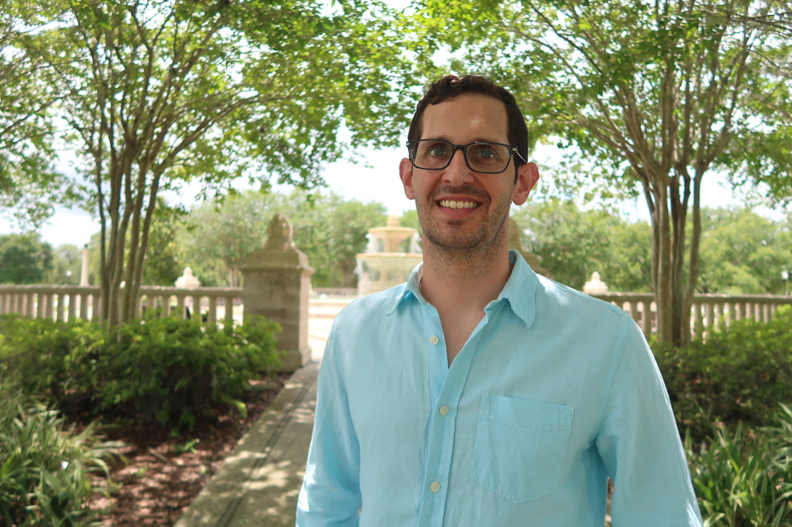

Detailed Bio
Traveller, runner, chemical engineer, skier, energy industry professional, and budding web developer. I don’t like to say no to opportunities, and I create them wherever I can. I grew up in Palm Bay, Florida before attending the University of Florida where I graduated in 2009 with high honors with a Bachelor of Science in Chemical Engineering.
Following college, I relocated to Baton Rouge, Louisiana to begin a career as a chemical engineer for a large multi-national oil company. I progressed through the early career positions in process engineering (day to day optimization of the manufacturing process), capital project engineering (designing and obtaining funding for capital and expense projects under $1M), and took on the lead process engineering role for a hydro processing unit downtime maintenance period.
I continued with the same company into more business centric roles. As the crude and specialties economist I took the lead site role in determining the raw materials feed for the site and lead the approval process for new raw materials with higher profit margins. This dynamic role gave me exposure to raw materials and product optimization, auditing of business practices and procedures, as well as a strong background in the development of short and long term economics.
I was then given the opportunity to Billings, Montana with my employee at the time. The common refrain from my friends was ,“What’s a Billings?” Billings is a charming small city in Montana with great opportunities to hike, mountain bike, and -most importantly- ski.

My first position in Billings focused on the operations side of the business as the Clean Products Coordinator. I was tasked with developing the schedule and recipes for five grades of gasoline gasoline and two grades of diesel to ensure all product specs were met and all shipment on trucks, pipelines, and the railroad were fulfilled. My position took the lead role ensuring that operations could execute blends and deliver production on schedule and on spec, the lab would have all required results before shipment deadlines, the product sales team had enough sales to match product output and were aware of any foreseen or unforeseen issues impacting production, the proper engineering resources were available to troubleshoot and fix process issues, and ensure management was aware of any potential or ongoing issues. This role required constant focus, and quick development and evaluation of solutions to varied and frequent unforeseen issues.
My next position broadened my my experience in long term project evaluation, planning, and development. I was tasked with evaluating projects with an anticipated capital cost of $4-30M. In this role I developed the business cases for major projects, and presented and recommended path forward to management at the local and corporate level. Upon approval I progressed the project to a more defined scoping stage by coordinating a multi-disciplinary team that further defined the scope and refined the cost of each project option. After final recommendations and review with corporate and local management, I would hand the project off to final design and execution.
Despite having a great and rewarding job, I started to get a little restless. I wanted to find a way more creative industry or career. The oil industry is an old and established business that must be very conservative due to the risks associated with trying new technology. I wanted to be at the forefront of technology- whether through a new industry or building new skills. So I resigned with a plan in mind… which included realizing my dream to travel and live abroad.
- Ski all winter (did I mention I love skiing)
- Travel Europe and find a place to live
- Live in Europe and learn a language
- Return home and change industries.
That leads us to Orlando, Florida today; Learning new creative skills closer to family, and looking for an industry at the leading edge of technology.
The adventure is just beginning…